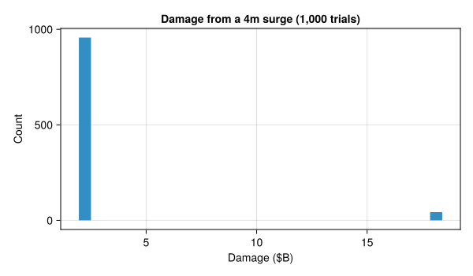
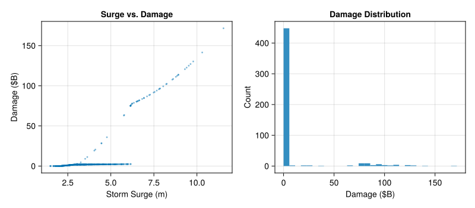

# install SimOptDecisions and ICOW
try
using SimOptDecisions
using ICOW
catch
import Pkg
try
Pkg.rm("SimOptDecisions")
catch
end
try
Pkg.rm("ICOW")
catch
end
Pkg.add(; url="https://github.com/dossgollin-lab/SimOptDecisions")
Pkg.add(; url="https://github.com/dossgollin-lab/ICOW.jl")
Pkg.instantiate()
using SimOptDecisions
using ICOW
end
using ICOW.Stochastic
using ICOW.EADLab 4: ICOW Model - Risk Analysis
CEVE 421/521
1 Overview
On Wednesday, you met the Island City On a Wedge (ICOW) model and estimated city geometry parameters using Google Maps. Today you’ll run the model to analyze flood risk for a city with a modest dike — enough protection to make things interesting, but not enough to stop big storms.
We’ll use two complementary approaches:
- Stochastic simulation: Sample specific storms and compute individual damage outcomes
- Expected Annual Damage (EAD): Integrate over the surge distribution analytically
This is the same hazard-damage convolution from Lab 2, but applied to a realistic city-scale model instead of a single house.
Learning Objectives:
- Understand the ICOW model and how it computes flood damage for a simplified coastal city
- Apply hazard-damage convolution (from Lab 2) to a realistic city-scale model
- Compare stochastic simulation (distribution of outcomes) vs. EAD (expected value via integration)
References:
2 Before Lab
Complete these steps BEFORE coming to lab:
Accept the GitHub Classroom assignment (link on Canvas)
Clone your repository:
git clone https://github.com/CEVE-421-521/lab-04-S26-yourusername.git cd lab-04-S26-yourusernameOpen the notebook in VS Code or Quarto preview
Run the first code cell — it will automatically install any missing packages (this may take 10-15 minutes the first time)
Submission: You will render this notebook to PDF and submit the PDF to Canvas. See Section 10 for details.
3 Setup
3.1 Load Packages
First, we load custom packages that have been developed for this class. These are installable Julia packages, but are not (yet) on the “registry” of Julia packages, so they need to be installed directly from GitHub. This motivates some slightly more complicated package-loading code.
using CairoMakie
using Distributions
using Random
using Statistics
using DataFrames
Random.seed!(2026)TaskLocalRNG()ICOW has two submodules: ICOW.Stochastic for event-by-event simulation (with random dike failure), and ICOW.EAD for analytical expected damage via integration.
4 Meet the Model
Before running any code, let’s build a mental model of what ICOW computes.
4.1 The City
The default configuration represents Manhattan — the same parameters from Wednesday’s lecture.
config = StochasticConfig()StochasticConfig{Float64}
Geometry V_city=1.5e12 H_bldg=30.0 H_city=17.0 D_city=2000.0 W_city=43000.0 H_seawall=1.75
Dike D_startup=2.0 w_d=3.0 s_dike=0.5 c_d=1000.0
Zones r_prot=1.1 r_unprot=0.95
Withdrawal f_w=1.0 f_l=0.01
Resistance f_adj=1.25 f_lin=0.35 f_exp=0.115 t_exp=0.4 b_basement=3.0
Damage f_damage=0.39 f_intact=0.03 f_failed=1.5 t_fail=0.95 p_min=0.05 f_runup=1.1
Threshold d_thresh=4.0e9 f_thresh=1.0 gamma_thresh=1.01Recall the key geometry parameters:
| Parameter | Default (Manhattan) | Meaning |
|---|---|---|
| \(V_{\text{city}}\) | $1.5 trillion | Total city value |
| \(H_{\text{city}}\) | 17 m | Peak elevation above sea level |
| \(H_{\text{seawall}}\) | 1.75 m | Existing seawall height |
4.2 The Baseline Policy
On Wednesday, you learned about ICOW’s five defense levers: Withdrawal (\(W\)), Dike Base (\(B\)), Dike Height (\(D\)), Resistance Height (\(R\)), and Resistance Fraction (\(P\)).
For this lab, we’ll give the city a modest dike (a_frac=0.15 allocates 15% of the city’s elevation as dike height, or about 2.5m). This is enough to stop smaller storms but can fail during larger ones — which makes the stochastic simulation interesting.
baseline = StaticPolicy(;
a_frac=0.3, # use 30% of city elevation as protection budget
w_frac=0.1, # 10% of budget goes to withdrawal
b_frac=0.2, # 20% of remaining budget goes to dike base
r_frac=0.1, # resistance height = 10% of H_city
P=0.5, # flood-proof 50% of buildings
)
fd = FloodDefenses(baseline, config)
fd5 Stochastic Analysis: One Storm
Let’s start with the simplest case — one specific surge height. Even a single surge produces a distribution of damages because of stochastic dike failure.
5.1 Run One Storm
scenario = StochasticScenario(
surges=[4.0],
mean_sea_level=[0.0],
discount_rate=0.0
)
outcome, trace = SimOptDecisions.simulate_traced(
config, scenario, baseline
)- 1
-
simulate_tracedreturns both the outcome and a trace object that records what happened at each time step.
5.2 Inspect the Trace
The trace records what ICOW computed internally. Let’s look at the step record for our single storm:
record = trace.step_records[1](investment = 5.564637817575113e10, damage = 1.955224393832893e9, W = 0.51, R = 1.7000000000000002, P = 0.5, D = 3.6719999999999997, B = 0.918)Each record contains: investment (cost of building defenses), damage (flood damage), and the defense levels (W, R, P, D, B). Notice that D is nonzero — that’s our modest dike.
5.3 Repeat Many Times
The damage from a 4-meter surge isn’t deterministic — ICOW samples whether the dike fails using a random Bernoulli draw. Let’s run the same 4m surge many times to see the distribution of outcomes:
damages_one_surge = map(1:1000) do _
outcome = simulate(config, scenario, baseline)
SimOptDecisions.value(outcome.damage)
end- 1
-
mapwith adoblock applies the function to each element of1:1000, returning a vector of results. Each call advances the global RNG (seeded above), so the dike failure draw is different each time. - 2
-
SimOptDecisions.value()extracts the numeric value from an outcome field.
5.4 Visualize
let
fig = Figure(size=(600, 350))
ax = Axis(
fig[1, 1];
xlabel="Damage (\$B)",
ylabel="Count",
title="Damage from a 4m surge (1,000 trials)"
)
hist!(ax, damages_one_surge ./ 1e9; bins=30)
fig
end
6 Stochastic Simulation: Many Storms
Now let’s sample many different surge heights from a GEV distribution — this is the full Monte Carlo convolution from Lab 2, applied to the ICOW model.
6.1 Sample Surges
surge_dist = GeneralizedExtremeValue(3.0, 1.0, 0.15)
n_samples = 500
surges = rand(surge_dist, n_samples)This uses the same type of GEV distribution you worked with in Labs 2 and 3: location \(\mu = 3.0\) m, scale \(\sigma = 1.0\) m, and shape \(\xi = 0.15\) (a heavy right tail).
6.2 Run Simulations
damages = map(surges) do surge
scenario = StochasticScenario(
surges=[surge],
mean_sea_level=[0.0],
discount_rate=0.0
)
outcome = simulate(config, scenario, baseline)
SimOptDecisions.value(outcome.damage)
end6.3 Visualize: Surge vs Damage
let
fig = Figure(size=(800, 350))
ax1 = Axis(
fig[1, 1];
xlabel="Storm Surge (m)",
ylabel="Damage (\$B)",
title="Surge vs. Damage"
)
scatter!(ax1, surges, damages ./ 1e9; markersize=4, alpha=0.5)
ax2 = Axis(
fig[1, 2];
xlabel="Damage (\$B)",
ylabel="Count",
title="Damage Distribution"
)
hist!(ax2, damages ./ 1e9; bins=30)
fig
end
6.4 Risk Statistics
DataFrame(
Metric=[
"Mean Annual Damage",
"Prob(damage > \$10B)",
"Maximum Damage"
],
Value=[
"\$$(round(mean(damages) / 1e9; digits=2))B",
"$(round(100 * mean(damages .> 10e9); digits=1))%",
"\$$(round(maximum(damages) / 1e9; digits=1))B"
]
)3×2 DataFrame
| Row | Metric | Value |
|---|---|---|
| String | String | |
| 1 | Mean Annual Damage | $10.25B |
| 2 | Prob(damage > $10B) | 10.2% |
| 3 | Maximum Damage | $171.6B |
7 EAD Mode: Integration Instead of Sampling
In the stochastic section, we sampled storms and averaged damages. EAD mode computes the same expected value by integrating over the surge distribution — no sampling noise.
This is the analytical counterpart to the stochastic mean: same GEV distribution, same damage function, but computed deterministically via numerical quadrature.
7.1 Run EAD
ead_config = EADConfig(
n_years=1,
integrator=QuadratureIntegrator(rtol=1e-6)
)
ead_scenario = EADScenario(
surge_loc=3.0,
surge_scale=1.0,
surge_shape=0.15,
mean_sea_level=[0.0],
discount_rate=0.0
)
outcome_ead = simulate(ead_config, ead_scenario, baseline)
ead_quadrature = SimOptDecisions.value(outcome_ead.expected_damage)7.2 Compare Stochastic vs. EAD
mc_mean = mean(damages)
pct_diff = round(100 * abs(mc_mean - ead_quadrature) / ead_quadrature; digits=1)
DataFrame(
Method=["Stochastic Mean ($(n_samples) samples)", "EAD (Quadrature)"],
Annual_Damage=[
"\$$(round(mc_mean / 1e9; digits=3))B",
"\$$(round(ead_quadrature / 1e9; digits=3))B"
]
)2×2 DataFrame
| Row | Method | Annual_Damage |
|---|---|---|
| String | String | |
| 1 | Stochastic Mean (500 samples) | $10.249B |
| 2 | EAD (Quadrature) | $9.478B |
println("The stochastic mean differs from the EAD by about $(pct_diff)%.")The stochastic mean differs from the EAD by about 8.1%.Both methods estimate the same quantity (expected annual damage) — the stochastic mean via sampling and the EAD via numerical integration.
8 Experiments: Change Things and See What Happens
Each experiment changes one parameter and shows the effect on risk. Read the code, run it, and answer the questions.
8.1 Experiment: Fat Tails
The GEV shape parameter \(\xi\) controls how heavy the right tail is. Let’s see what happens when we increase it from 0.15 to 0.3.
Stochastic mode:
surge_dist_fat = GeneralizedExtremeValue(3.0, 1.0, 0.3)
surges_fat = rand(surge_dist_fat, n_samples)
damages_fat = map(surges_fat) do surge
scenario = StochasticScenario(
surges=[surge], mean_sea_level=[0.0], discount_rate=0.0
)
outcome = simulate(config, scenario, baseline)
SimOptDecisions.value(outcome.damage)
end
mc_mean_fat = mean(damages_fat)EAD mode:
ead_scenario_fat = EADScenario(
surge_loc=3.0,
surge_scale=1.0,
surge_shape=0.3,
mean_sea_level=[0.0],
discount_rate=0.0
)
outcome_fat = simulate(ead_config, ead_scenario_fat, baseline)
ead_fat = SimOptDecisions.value(outcome_fat.expected_damage)DataFrame(
Scenario=["Baseline (ξ=0.15)", "Fat tails (ξ=0.3)"],
Stochastic_Mean=[
"\$$(round(mc_mean / 1e9; digits=3))B",
"\$$(round(mc_mean_fat / 1e9; digits=3))B"
],
EAD=[
"\$$(round(ead_quadrature / 1e9; digits=3))B",
"\$$(round(ead_fat / 1e9; digits=3))B"
]
)2×3 DataFrame
| Row | Scenario | Stochastic_Mean | EAD |
|---|---|---|---|
| String | String | String | |
| 1 | Baseline (ξ=0.15) | $10.249B | $9.478B |
| 2 | Fat tails (ξ=0.3) | $12.818B | $14.549B |
8.2 Experiment: Sea-Level Rise
Now add 0.5 meters of sea-level rise to the baseline scenario.
EAD mode:
ead_scenario_slr = EADScenario(
surge_loc=3.0,
surge_scale=1.0,
surge_shape=0.15,
mean_sea_level=[0.5],
discount_rate=0.0
)
outcome_slr = simulate(ead_config, ead_scenario_slr, baseline)
ead_slr = SimOptDecisions.value(outcome_slr.expected_damage)pct_increase = round(100 * (ead_slr - ead_quadrature) / ead_quadrature; digits=1)
DataFrame(
Scenario=["Baseline (MSL=0)", "SLR (MSL=+0.5m)"],
EAD=[
"\$$(round(ead_quadrature / 1e9; digits=3))B",
"\$$(round(ead_slr / 1e9; digits=3))B"
],
Change=["—", "+$(pct_increase)%"]
)2×3 DataFrame
| Row | Scenario | EAD | Change |
|---|---|---|---|
| String | String | String | |
| 1 | Baseline (MSL=0) | $9.478B | — |
| 2 | SLR (MSL=+0.5m) | $12.743B | +34.4% |
8.3 Experiment: Your City (from Wednesday)
Now it’s your turn — use the city parameters you estimated on Wednesday. Replace the placeholder values for H_city, D_city, W_city, and H_seawall with your city’s values, then run EAD to compare against Manhattan.
See the ICOW parameter documentation for the full list of parameters you can change — try adjusting others beyond the four listed here.
my_config = StochasticConfig(
H_city=10.0,
D_city=1500.0,
W_city=30000.0,
H_seawall=1.0
)
my_ead_config = EADConfig(
n_years=1,
integrator=QuadratureIntegrator(rtol=1e-6),
H_city=my_config.H_city,
D_city=my_config.D_city,
W_city=my_config.W_city,
H_seawall=my_config.H_seawall
)
outcome_my = simulate(my_ead_config, ead_scenario, baseline)
ead_my = SimOptDecisions.value(outcome_my.expected_damage)DataFrame(
City=["Manhattan (default)", "Your city"],
EAD=[
"\$$(round(ead_quadrature / 1e9; digits=3))B",
"\$$(round(ead_my / 1e9; digits=3))B"
]
)2×2 DataFrame
| Row | City | EAD |
|---|---|---|
| String | String | |
| 1 | Manhattan (default) | $9.478B |
| 2 | Your city | $44.086B |
Enrichment (Optional)
If you finish early, try one of these extensions:
- VaR and CVaR: Compute the 95th percentile damage (Value at Risk) and the average of damages exceeding that threshold (Conditional Value at Risk) from the stochastic samples
- Damage function: For each surge height from 0 to 15m (in 0.1m steps), compute the expected damage. Plot the resulting damage function
- No defenses: Try a true do-nothing policy (
a_frac=0.0) — how does the scatter plot change? (Hint: what happens to the two branches?) - Stronger dike: Try
a_frac=0.3— does doubling the dike height halve the EAD?
9 Summary
Key takeaways from this lab:
- ICOW computes flood damage for a simplified coastal city using a wedge geometry
- Stochastic mode shows individual outcomes — you see the full variability and tail risk
- EAD mode integrates over the surge distribution — you get the expected value deterministically
- Risk depends nonlinearly on surge height, GEV parameters, and city geometry
Your Answers
Write your answers in the spaces below. Each question references a specific section above — scroll up to review the context if needed.
Question 1 (Section 4: One Storm)
The histogram shows two clusters of damage values for a single surge height. Why does the same surge produce different damage amounts? What physical mechanism in the ICOW model creates this pattern?
Question 2 (Section 5: Many Storms)
Look at the scatter plot. You should see two “branches” — one where the dike holds and one where it fails. At what surge height do the branches merge? Also: what does the sparse sampling in the high-damage tail tell you about Monte Carlo efficiency?
Question 3 (Section 5: Risk Statistics)
A city planner says: “Our expected annual damage is $X billion, so we should budget $X billion per year for flood recovery.” What’s wrong with this reasoning?
Question 4 (Section 6: EAD Mode)
Why don’t the stochastic mean and EAD match exactly? Which one would you trust more for a policy decision, and why?
Question 5 (Section 7: Fat Tails)
How did increasing the shape parameter (fatter tails) affect the EAD? Why might the stochastic estimate be less reliable when the distribution has fatter tails?
Question 6 (Section 7: Sea-Level Rise)
How much did 0.5m of sea-level rise increase the EAD? Is the increase proportional to the SLR amount?
Question 7 (Section 7: Your City)
How does your city’s baseline risk compare to Manhattan’s? What features of your city’s geometry explain the difference?
10 Submission
Write your answers in the Answer Template section above
Render to PDF:
- In VS Code: Open the command palette (
Cmd+Shift+P/Ctrl+Shift+P) → “Quarto: Render Document” → select Typst PDF - Or from the terminal:
quarto render index.qmd --to typst
- In VS Code: Open the command palette (
Submit the PDF to the Lab 4 assignment on Canvas
Push your code to GitHub (for backup):
git add -A && git commit -m "Lab 4 complete" && git push
Checklist
Before submitting: